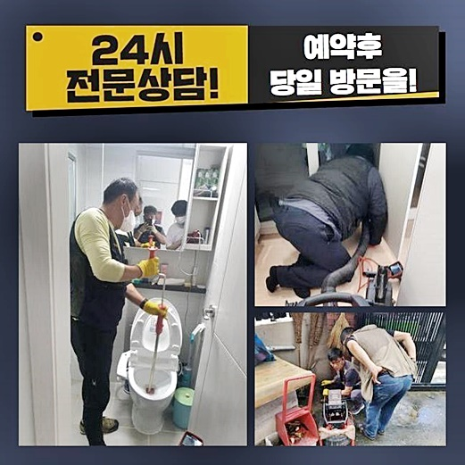
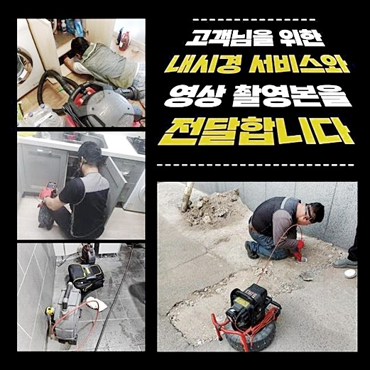
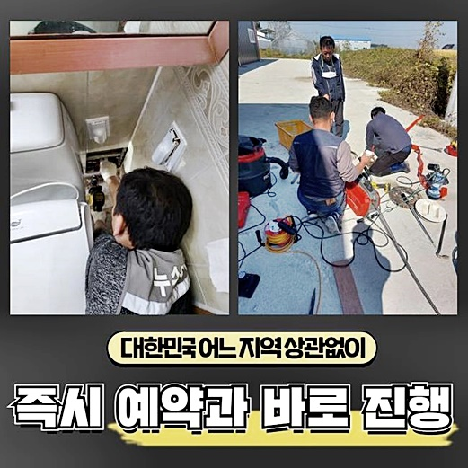
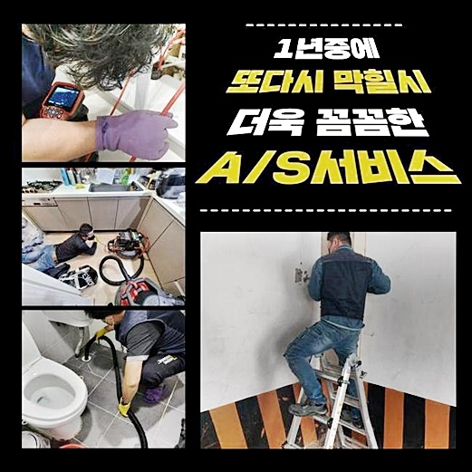
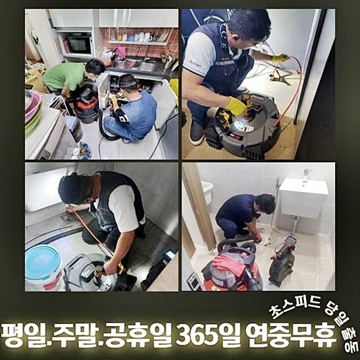
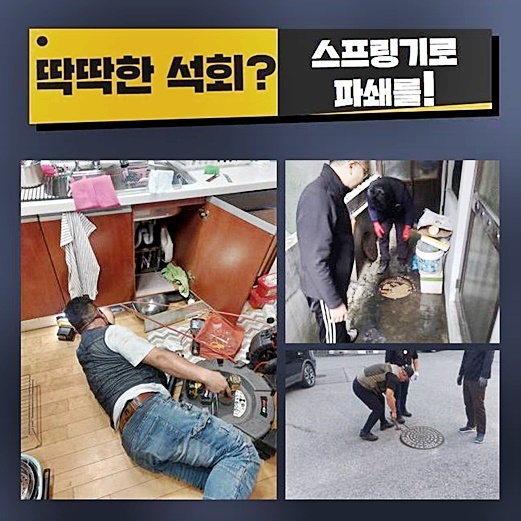
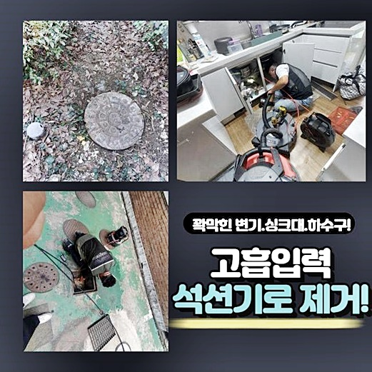

🏠 강북 번동싱크대배수구역류 송천동 집수정청소 출장설비
용인 싱크대막힘 전문 시공 후기

📋 작업 개요
- 위치: 용인
- 서비스 유형: 싱크대막힘, 하수구막힘, 배관막힘, 집수정막힘, 역류해결, 뚫는업체, 배관청소, 고압세척
- 작업 일시: 2024. 6. 13. 18:32
- 업체명: 하수구수사대 (010-5615-2118)
🔍 문제 상황
강북 번동싱크대배수구역류 송천동 집수정청소 출장설비
하수구들이 제 기능들을 잃는다면 생활을 수행할때 좋지 못한 영향을 미쳐요
앞으로 배수관이 막혀버린 예시를 들어 이런저런 사항들을 설명드려볼테니 이득이 될 만한 부분을 살피면 도움되지않을까합니다
즉시 내용안내들을 하겠습니다!
거주지에서 생기는 증상으로 욕실어딘가에서 막히는 문제들을 들어볼 수 있겠죠
반대로 세탁기들이 놓여진 공간에서는 배수가 이뤄질때 옷감 잔해나 먼지처럼 여러 이물들이 흘러가서 배수관을 병들게하는 경우가 보통 나타나죠
배수관이 막혀버렸을 경우에 애먼 곳에서 역류하는 문제가 나타나 심층부까지 오염원들이 들어찬 문제들을 확인할 수 있죠
내방한 현장에서는 화장실공간서 수돗수도를 흘려보내면 발코니로 하수들이 올라오는 상황이다라고 의뢰를 하셨습니다
저희들은 오래도록 전반적 하수구 기능장애를 풀어내고 있는 까닭에 일반적으로 현장을 추론하고 점검을 이어갑니다
작업에 임할때에는 사용될 기기들을 챙겨서 문제 장소에 방문드렸죠
일반적으로 배수구가 문제를 일으키는것은 자주 있는 일이라 절대적인 원인들을 설명이 안되나 대부분은 머리카락이나 기름기를 떠올릴 수 있답니다
질긴 머리카락들과 슬러지들이 섞였을땐 배관속에는 굳어서 배수로를 막혀버리게 해요

🔎 원인 분석
💡 전문가 진단: 정밀 진단 장비를 사용하여 슬러지의 고착 여부를 판명하고 타격/세척 작업을 실시했습니다.
그리고 한 군데가 막힌탓에 이곳저곳에 피해를 옮기는 상황일 시 뚫음작업이 난항에 빠지게 됩니다
기기가 결여된 채론 해결들이 불가하기에 전문가의 실력이 요구된다 생각해요
내방하고서 세탁기가 있는 곳로 이동하였더니 하수관에선 역류한 오물들을 확인했죠
냄새들도 풍기는걸 보니 오랫동안 이물이 쌓이는 바람에 증세들을 가중시킨걸로 보았습니다
벽면에 붙은 고착물들이 유독 심각하다는걸 곧장 예상했죠
배수로에 석션장치를 투입시켜 부유물 제거를 진행해보고자 했습니다
빨리 해결될거란 생각자체는 멀리했지만 생각한대로 이렇다할 성과는 없었죠
심각하지 않은 상태일때 석션장비로 시정이 이뤄지는 상황들도 존재합니다
허나 이곳의 문제들은 그렇지않아서 파쇄작업을 하기에 이르렀는데요
하지만 곧장 샤프트장치를 무리하게 쓸 때는 배수관을 손상시키기에 안쪽을 내시경카메라로 진단을 거치고 수리를 이어가기로 했답니다
내시경기기로 배수라인을 막아서는 머리카락뭉치와 오염원을 진단했습니다
관리없이 오랫동안 쌓이게되어 구간마다 녹아든 상태였고 슬러지성분으로 거듭되어 수월하게 배출되지 않은것이에요

🔧 작업 과정
보통 기름기들은 주방에 있는 배수시설 주변으로 목격되지만 다른 안에서 발생되는 잔해물도 누적됨에따라 문제를 일으키는 경우도 있답니다
이물이 쌓이면서 안쪽이 온도 차를 발생하는 사태로 비로소 석회처럼 되고 머리카락들과 엉키면 수리가 쉽지 않게됩니다
내시경으로 점검했던 이물의 경우 생각한것보다는 깊숙한 부위에 자리했고 흡착된 이물들이 많이 포진해 석선장치로는 시정이 어려웠던 것입니다
주위로 흐른 오염물을 제거한뒤 안쪽을 빨아당겨서 이후에 작업에 있어서 도움들이 될 수 있는 기반을 만들어냈죠
슬러지혹은 석회들을 청결하게 시정해줄 수 있는 샤프트장치를 떠올릴 수 있답니다
샤프트의 경우 상단부에 사슬들이 부착되어서 안쪽의 오염원을 청소시켜요
라인을 안쪽으로 넣은 뒤 운용하기에 휘어진 구간까지 꼼꼼히 스케일링을 수행합니다
유의할 것으론 체인부로 깊은 지점에 자리한 오염물을 제거하는 작업인 탓에 훼손의 가능성도 고려해야합니다
그러하기에 내시경장치로 안쪽을 계속해서 점검하고 청소들을 진행합니다
장비들을 써서 청소가 덜 된 잔여물 세척에 가속화를 시켰어요
청소를 하다보니 샤프트 머리부분에 딸려온 머리카락까지 보았는데요
발코니쪽의 오염원을 제거시키고 내부에 잔존하는 이물들은 석션기기로 흡입해 문제없이 원상복구시켰어요
욕실내부의 증상도 시정하기위해 화장실의 배수관을 주시했고 배관청소를 이행했습니다
살펴보니 배수장애 증세와 더불어 물솟음이 벌어진 상태로 내시경카메라로 안쪽을 살펴야했습니다
똑같이 머리카락등과 딱딱해진 여타 이물을 내시경장비를 써서 인지하게 되었습니다
스케일링을 하면서 제거된 잔해물의 양들도 많았습니다
배관속에는 고착화가 시작되었고 내구성도 저하되어 세척까지 의외로 길어졌죠
이러한 잔해가 하수관을 막히게하여 밑으로 흘러갈 틈조차 없는 것으로 판단했어요
최종적으로 욕실배수구와 발코니 모두에서 배수테스트 과정을 시행했죠
통에 수돗물들을 충분히 받은 뒤에 전부 붓고 빠른 속도로 배출되는 상황까지 확인할 수 있었죠


✅ 작업 완료
오차없이 오늘의 현장까지 이전 상태와 같게 시정해냈습니다
만일 막히게되었거나 역류등이 발생해 난감함에 빠진 분들이 계시면 곧장 저희를 믿고 전화주시어 세척을 이어가시길 바랍니다!
어디여도 60분안에 찾아뵙고 작업진행을 가감없이 공개하므로 우려하실 일은 발생되지않아요!
불현듯 생긴 배수장애를 신경써서 목격하셨을땐 저희와 해결에 힘을 쏟아부어봅시다!
이것외에 궁금하신게 있으시면 시간에 상관없이 물으셔도 상관없으니 편히 의뢰해주신다면 최선을 다해 맞이하겠습니다




⚠️ 주방 싱크대 배관 막힘 예방 수칙
- ✅ 기름기가 묻은 식기나 프라이팬은 설거지 전 키친타올로 반드시 기름때를 닦아내세요.
- ✅ 주기적으로 싱크대 개수대에 뜨거운 물을 가득 받아 한 번에 내려 배관 내부 기름을 씻어내세요.
- ✅ 배수구 거름망을 미세한 필터로 사용하시고 음식물 찌꺼기가 틈으로 새어 들지 않게 관리하세요.
- ✅ 베이킹소다와 식초를 뜨거운 물과 함께 일주일에 한 번씩 부어주면 배관 살균과 막힘 예방에 좋습니다.
💡 핵심 정리
- 확실한 장비 작업(내시경 점검 및 샤프트 스케일링)으로 원인을 뿌리 뽑습니다.
- 작업 후 1년 이내에 동일한 부위 재발 시 100% 무상 A/S 서비스를 보장합니다.
- 서울 · 경기 · 인천 전 지역에 24시간 언제든 긴급 출동할 수 있도록 항시 대기 중입니다.
❓ 자주 묻는 질문 (FAQ)
🚨 용인 싱크대막힘 문제로 고민이신가요?
정확한 원인 진단과 확실한 시공으로 재발 없는 해결을 약속드립니다.
24시간 긴급 출동 | 서울 · 경기 · 인천 전지역 | 1년 내 재발 시 무상 A/S